Notre projet explore diverses stratégies pour gérer les valeurs manquantes, en s’appuyant sur un dataset provenant de la plateforme https://www.kaggle.com/datasets. Au cœur de notre approche se trouve une analyse descriptive, qui nous a permis de comprendre la distribution des données en examinant les tendances et la dispersion à travers des mesures comme la moyenne, la médiane et l’écart-type, et en utilisant des outils visuels tels que les histogrammes et les box-plots.
Concernant le remplacement des N/A, nous avons opté pour trois techniques adaptées aux caractéristiques de notre dataset : La régression linéaire, l’imputation multiple par MICE (Multiple Imputation by Chained Equations) et l’imputation multiple par Analyse en Composantes Principales (ACP).
Présentation du code
Je vous présente ci-dessous, le code utilisé pour mener à bien ce projet, avec les étapes et explications correspondantes.
Warning in check_dep_version(): ABI version mismatch:
lme4 was built with Matrix ABI version 1
Current Matrix ABI version is 0
Please re-install lme4 from source or restore original 'Matrix' package
À titre informatif, notre base de données est une base sur des crabes destinés à la consommation dans des restaurants de la région de Boston.
Le type de crabe le plus commun à cet effet est le crabe bleu américain qui est natif des côtes atlantiques américaines.
Le crabe bleu américain est pêché et consommé en grande quantité, principalement aux Etats-Unis et au Mexique. Chaque année, 58 000 tonnes sont prélevées ; son importance économique et culinaire est considérable sur la côte est des Etats-Unis, en particulier dans les états de Louisiane, du Maryland, de Caroline du Nord, du New Jersey et du Massachusetts.
'data.frame': 3893 obs. of 9 variables:
$ sexe : chr "F" "M" "I" "F" ...
$ longueur : num 43.8 27.1 31.6 35.8 27.1 ...
$ diametre : num 35.8 19.8 23.6 27.1 20.2 ...
$ hauteur : num 12.57 6.48 7.62 7.62 6.48 ...
$ poids : num 0.698 0.153 0.225 0.382 0.196 ...
$ poids.chair : num 0.3496 0.0651 0.0916 0.1346 0.0981 ...
$ poids.visceres: num 0.1583 0.039 0.0454 0.0647 0.0422 ...
$ poids.coquille: num 0.1913 0.0442 0.0784 0.1487 0.0482 ...
$ age : int 9 6 6 10 6 8 15 10 13 7 ...
Nos variables sont bien classées, nous n’avons pas à les modifier.
plot(crabe)
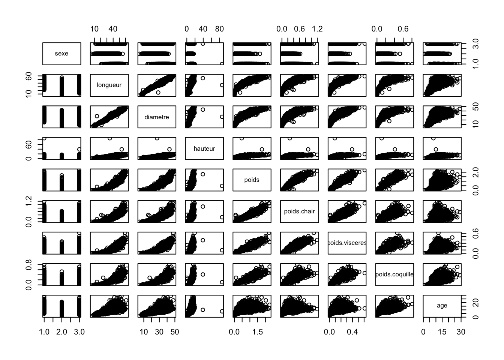
Après un aperçu rapide de nos données, nous pouvons observer que :
Les graphiques ont différentes tendances et degrés de corrélation. Certains indiquent une corrélation positive marquée, visible par les points qui forment une trajectoire nette ascendante de gauche à droite.
Des points paraissent s’écarter de la tendance générale dans plusieurs scatter plots, suggérant la présence de valeurs aberrantes.
Notre jeu de données ne présente pas de valeurs manquantes. Cependant, en ce qui concerne la variable qualitative “sexe”, nous observons une anomalie qui nécessite une analyse plus détaillée. En effet, nous recensons trois catégories : M pour masculin, F pour féminin et I pour indéfini, ce qui pourrait indiquer une erreur.
Afin de mieux comprendre nos données, nous allons réaliser une première analyse descriptive des variables qui présentent des valeurs atypiques.
Analyse descriptive exploratoire
L’analyse descriptive exploratoire a pour objectif de déterminer la présence de valeurs aberrantes ou extrêmes au sein de nos données, afin de procéder à leur correction si nécessaire.
Calcul des mesures de dispersion
summary(crabe)
sexe longueur diametre hauteur
Length:3893 Min. : 5.715 Min. : 4.191 Min. : 0.000
Class :character 1st Qu.:34.290 1st Qu.:26.670 1st Qu.: 8.763
Mode :character Median :41.529 Median :32.385 Median :11.049
Mean :39.969 Mean :31.117 Mean :10.649
3rd Qu.:46.863 3rd Qu.:36.576 3rd Qu.:12.573
Max. :62.103 Max. :49.530 Max. :86.106
poids poids.chair poids.visceres poids.coquille
Min. :0.001607 Min. :0.0008037 Min. :0.0004018 Min. :0.001205
1st Qu.:0.359251 1st Qu.:0.1514963 1st Qu.:0.0755473 1st Qu.:0.105284
Median :0.646170 Median :0.2704431 Median :0.1378335 Median :0.188868
Mean :0.668121 Mean :0.2893730 Mean :0.1456185 Mean :0.192659
3rd Qu.:0.929472 3rd Qu.:0.4046600 3rd Qu.:0.2041383 3rd Qu.:0.265219
Max. :2.270838 Max. :1.1958969 Max. :0.6108076 Max. :0.807713
age
Min. : 1.000
1st Qu.: 8.000
Median :10.000
Mean : 9.955
3rd Qu.:11.000
Max. :29.000
Longueur : La longueur des crabes varie de 5.715 à 62.103 avec une moyenne d’environ 39.969. La médiane est de 41.529, ce qui suggère une distribution légèrement asymétrique vers les valeurs inférieures puisque la moyenne est inférieure à la médiane. Les valeurs sont concentrées principalement entre 34.290 et 46.863, qui représentent les premiers et troisième quartile, indiquant que 50 % des observations sont dans cette plage.
Diamètre : le diamètre varie de 4.191 à 49.530, avec une moyenne de 31.117. La médiane est de 32.385, suggérant une distribution similaire à celle de la longueur, avec une légère asymétrie. Le diamètre des crabes est généralement compris entre 26.670 et 36.576 (premier et troisième quartiles).
Hauteur : la hauteur présente une gamme plus étendue allant de 0 à 86.106, avec une moyenne de 10.649. La médiane de 11.049 est supérieure à la moyenne, ce qui pourrait indiquer une distribution asymétrique avec une queue de distribution vers les valeurs inférieures.
Poids : le poids total des crabes est compris entre 0.001607 et 2.270838, avec une moyenne de 0.668121. La médiane est de 0.646170, indiquant une distribution des poids assez symétrique autour de la valeur centrale.
Poids de chair : le poids de la chair varie de 0.0008037 à 1.1958969, avec une moyenne de 0.2893730. La médiane, à 0.2704431, est légèrement inférieure à la moyenne, suggérant une distribution modérément asymétrique.
Poids des viscères : le poids des viscères varie de 0.0004018 à 0.6108076, avec une moyenne de 0.1456185. La médiane est assez proche de la moyenne, ce qui indique une distribution assez équilibrée.
Poids de la coquille : le poids de la coquille a une plage allant de 0.001205 à 0.807713, avec une moyenne de 0.192659. La médiane est également proche de la moyenne, ce qui suggère une distribution régulière.
Age : l’âge varie de 1 à 29 mois, avec une moyenne proche de la médiane (9.955 contre 10), indiquant une distribution symétrique. La plupart des crabes ont entre 8 et 11 mois (premier et troisième quartiles), ce qui montre que les âges sont relativement concentrés.
Vérification de l’absence de doublons
Notre jeu de données est composé de 3 893 entrées. Nous allons vérifier s’il contient des doublons.
crabe |>distinct() |>nrow()
[1] 3893
Aucune ligne n’est répétée, nous pouvons donc conserver la totalité de nos données
Diagramme en camembert
Sexe
crabe |>count(sexe) |>mutate(pourcentage = n /sum(n) *100) |>ggplot(aes(x ="", y = n, fill = sexe)) +geom_bar(stat ="identity", width =1) +coord_polar(theta ="y") +scale_fill_manual(values = vecteur_couleur) +geom_text(aes(label =paste0(round(pourcentage, 1), "%")),position =position_stack(vjust =0.5),color ="white") +labs(title ="Distribution des sexes dans le jeu de données ",fill ="Sexe" ) +theme_void()
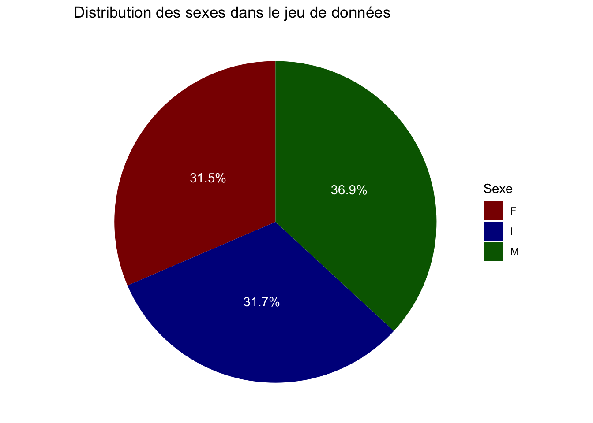
Il illustre la distribution des sexes dans notre jeu de données. Les mâles représentent la plus grande proportion avec 36,9 %, tandis que les femelles et les indéfinis ont des proportions presque égales de 31,5 % et 31,7 % respectivement.
Représentation des valeurs aberrantes grâce à des boxplots
crabe |>pivot_longer(cols = longueur:age,names_to ="mesure",values_to ="valeur" ) |>ggplot() +aes(y = valeur, x = sexe, color = sexe) +geom_boxplot() +geom_jitter(alpha =0.3, position =position_jitter(width =0.2)) +facet_wrap(~ mesure, scales ="free_y") +scale_color_manual(values =vecteur_couleur)+labs(title ="Distribution des mesures par sexe")+theme_bw()
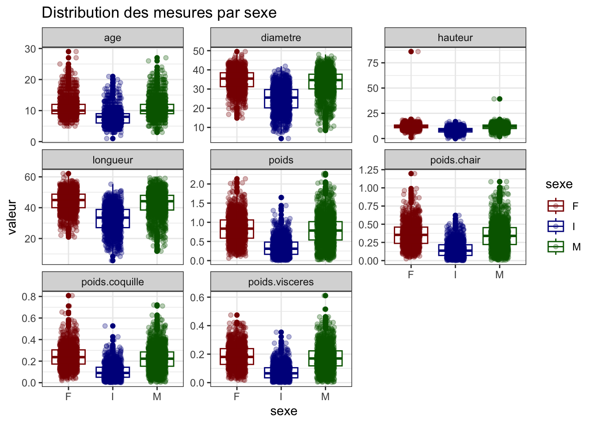
Nous pouvons donc observer la présence de valeurs aberrantes ou extrêmes dans nos variables. Pour les identifier, nous avons utilisé le test de Rosner.
rosnerTest(crabe$longueur, k=10, alpha=0.05)
Results of Outlier Test
-------------------------
Test Method: Rosner's Test for Outliers
Hypothesized Distribution: Normal
Data: crabe$longueur
Sample Size: 3893
Test Statistics: R.1 = 3.740649
R.2 = 3.456138
R.3 = 3.294960
R.4 = 3.299993
R.5 = 3.263207
R.6 = 3.226213
R.7 = 3.230957
R.8 = 3.151732
R.9 = 3.114132
R.10 = 3.118429
Test Statistic Parameter: k = 10
Alternative Hypothesis: Up to 10 observations are not
from the same Distribution.
Type I Error: 5%
Number of Outliers Detected: 0
i Mean.i SD.i Value Obs.Num R.i+1 lambda.i+1 Outlier
1 0 39.96859 9.157125 5.715 1331 3.740649 4.357703 FALSE
2 1 39.97739 9.141820 8.382 754 3.456138 4.357646 FALSE
3 2 39.98551 9.128947 9.906 1178 3.294960 4.357588 FALSE
4 3 39.99325 9.117367 9.906 3729 3.299993 4.357531 FALSE
5 4 40.00098 9.105761 10.287 1901 3.263207 4.357474 FALSE
6 5 40.00863 9.094449 10.668 308 3.226213 4.357416 FALSE
7 6 40.01617 9.083430 10.668 956 3.230957 4.357359 FALSE
8 7 40.02373 9.072385 11.430 1135 3.151732 4.357302 FALSE
9 8 40.03109 9.061943 11.811 694 3.114132 4.357244 FALSE
10 9 40.03835 9.051785 11.811 2766 3.118429 4.357187 FALSE
rosnerTest(crabe$diametre, k=10, alpha=0.05)
Results of Outlier Test
-------------------------
Test Method: Rosner's Test for Outliers
Hypothesized Distribution: Normal
Data: crabe$diametre
Sample Size: 3893
Test Statistics: R.1 = 3.558731
R.2 = 3.211973
R.3 = 3.166162
R.4 = 3.120107
R.5 = 3.124422
R.6 = 3.078090
R.7 = 3.082245
R.8 = 3.086418
R.9 = 3.090607
R.10 = 3.043926
Test Statistic Parameter: k = 10
Alternative Hypothesis: Up to 10 observations are not
from the same Distribution.
Type I Error: 5%
Number of Outliers Detected: 0
i Mean.i SD.i Value Obs.Num R.i+1 lambda.i+1 Outlier
1 0 31.11683 7.566132 4.191 1331 3.558731 4.357703 FALSE
2 1 31.12375 7.554779 6.858 754 3.211973 4.357646 FALSE
3 2 31.12998 7.545724 7.239 1178 3.166162 4.357588 FALSE
4 3 31.13612 7.536961 7.620 1135 3.120107 4.357531 FALSE
5 4 31.14217 7.528488 7.620 3729 3.124422 4.357474 FALSE
6 5 31.14822 7.519995 8.001 308 3.078090 4.357416 FALSE
7 6 31.15417 7.511789 8.001 956 3.082245 4.357359 FALSE
8 7 31.16013 7.503564 8.001 2913 3.086418 4.357302 FALSE
9 8 31.16609 7.495321 8.001 3634 3.090607 4.357244 FALSE
10 9 31.17206 7.487061 8.382 1648 3.043926 4.357187 FALSE
rosnerTest(crabe$hauteur, k=10, alpha=0.05)
Results of Outlier Test
-------------------------
Test Method: Rosner's Test for Outliers
Hypothesized Distribution: Normal
Data: crabe$hauteur
Sample Size: 3893
Test Statistics: R.1 = 23.582729
R.2 = 9.658305
R.3 = 3.628763
R.4 = 3.635390
R.5 = 3.380918
R.6 = 3.255592
R.7 = 3.260460
R.8 = 3.134283
R.9 = 3.007441
R.10 = 3.011338
Test Statistic Parameter: k = 10
Alternative Hypothesis: Up to 10 observations are not
from the same Distribution.
Type I Error: 5%
Number of Outliers Detected: 2
i Mean.i SD.i Value Obs.Num R.i+1 lambda.i+1 Outlier
1 0 10.64892 3.199676 86.106 2257 23.582729 4.357703 TRUE
2 1 10.62953 2.962577 39.243 749 9.658305 4.357646 TRUE
3 2 10.62217 2.927216 0.000 270 3.628763 4.357588 FALSE
4 3 10.62490 2.922632 0.000 3868 3.635390 4.357531 FALSE
5 4 10.62764 2.918035 0.762 1331 3.380918 4.357474 FALSE
6 5 10.63017 2.914116 1.143 1124 3.255592 4.357416 FALSE
7 6 10.63262 2.910514 1.143 3543 3.260460 4.357359 FALSE
8 7 10.63506 2.906903 1.524 986 3.134283 4.357302 FALSE
9 8 10.63740 2.903599 1.905 694 3.007441 4.357244 FALSE
10 9 10.63965 2.900588 1.905 1135 3.011338 4.357187 FALSE
rosnerTest(crabe$poids, k=10, alpha=0.05)
Results of Outlier Test
-------------------------
Test Method: Rosner's Test for Outliers
Hypothesized Distribution: Normal
Data: crabe$poids
Sample Size: 3893
Test Statistics: R.1 = 4.069788
R.2 = 3.984935
R.3 = 3.742623
R.4 = 3.540531
R.5 = 3.536432
R.6 = 3.538473
R.7 = 3.499292
R.8 = 3.483594
R.9 = 3.475026
R.10 = 3.473644
Test Statistic Parameter: k = 10
Alternative Hypothesis: Up to 10 observations are not
from the same Distribution.
Type I Error: 5%
Number of Outliers Detected: 0
i Mean.i SD.i Value Obs.Num R.i+1 lambda.i+1 Outlier
1 0 0.6681205 0.3938086 2.270838 2897 4.069788 4.357703 FALSE
2 1 0.6677087 0.3930200 2.233868 773 3.984935 4.357646 FALSE
3 2 0.6673062 0.3922674 2.135415 2572 3.742623 4.357588 FALSE
4 3 0.6669288 0.3916107 2.053439 230 3.540531 4.357531 FALSE
5 4 0.6665722 0.3910292 2.049420 2717 3.536432 4.357474 FALSE
6 5 0.6662166 0.3904498 2.047813 539 3.538473 4.357416 FALSE
7 6 0.6658611 0.3898704 2.030131 502 3.499292 4.357359 FALSE
8 7 0.6655100 0.3893056 2.021693 1758 3.483594 4.357302 FALSE
9 8 0.6651610 0.3887470 2.016067 1327 3.475026 4.357244 FALSE
10 9 0.6648132 0.3881920 2.013254 3186 3.473644 4.357187 FALSE
rosnerTest(crabe$poids.chair, k=10, alpha=0.05)
Results of Outlier Test
-------------------------
Test Method: Rosner's Test for Outliers
Hypothesized Distribution: Normal
Data: crabe$poids.chair
Sample Size: 3893
Test Statistics: R.1 = 5.095668
R.2 = 4.492498
R.3 = 4.493418
R.4 = 4.070734
R.5 = 4.045732
R.6 = 4.027361
R.7 = 4.001947
R.8 = 3.847766
R.9 = 3.846418
R.10 = 3.743692
Test Statistic Parameter: k = 10
Alternative Hypothesis: Up to 10 observations are not
from the same Distribution.
Type I Error: 5%
Number of Outliers Detected: 3
i Mean.i SD.i Value Obs.Num R.i+1 lambda.i+1 Outlier
1 0 0.2893730 0.1779009 1.1958969 2572 5.095668 4.357703 TRUE
2 1 0.2891401 0.1773291 1.0857908 1950 4.492498 4.357646 TRUE
3 2 0.2889354 0.1768912 1.0837816 773 4.493418 4.357588 TRUE
4 3 0.2887310 0.1764541 1.0070288 2317 4.070734 4.357531 FALSE
5 4 0.2885463 0.1761003 1.0010011 1294 4.045732 4.357474 FALSE
6 5 0.2883631 0.1757518 0.9961789 3351 4.027361 4.357416 FALSE
7 6 0.2881810 0.1754072 0.9901512 1327 4.001947 4.357359 FALSE
8 7 0.2880004 0.1750678 0.9616201 3186 3.847766 4.357302 FALSE
9 8 0.2878270 0.1747563 0.9600127 539 3.846418 4.357244 FALSE
10 9 0.2876539 0.1744455 0.9407240 854 3.743692 4.357187 FALSE
Results of Outlier Test
-------------------------
Test Method: Rosner's Test for Outliers
Hypothesized Distribution: Normal
Data: crabe$poids.coquille
Sample Size: 3893
Test Statistics: R.1 = 5.501712
R.2 = 4.744584
R.3 = 4.672147
R.4 = 4.685917
R.5 = 4.190527
R.6 = 4.072972
R.7 = 3.954369
R.8 = 3.816471
R.9 = 3.574841
R.10 = 3.573856
Test Statistic Parameter: k = 10
Alternative Hypothesis: Up to 10 observations are not
from the same Distribution.
Type I Error: 5%
Number of Outliers Detected: 4
i Mean.i SD.i Value Obs.Num R.i+1 lambda.i+1 Outlier
1 0 0.1926588 0.1117932 0.8077126 3296 5.501712 4.357703 TRUE
2 1 0.1925008 0.1113718 0.7209137 2897 4.744584 4.357646 TRUE
3 2 0.1923649 0.1110634 0.7112693 2726 4.672147 4.357588 TRUE
4 3 0.1922316 0.1107655 0.7112693 3070 4.685917 4.357531 TRUE
5 4 0.1920981 0.1104664 0.6550107 199 4.190527 4.357474 FALSE
6 5 0.1919790 0.1102308 0.6409461 1486 4.072972 4.357416 FALSE
7 6 0.1918635 0.1100094 0.6268814 1924 3.954369 4.357359 FALSE
8 7 0.1917516 0.1098019 0.6108076 1826 3.816471 4.357302 FALSE
9 8 0.1916437 0.1096100 0.5834820 1556 3.574841 4.357244 FALSE
10 9 0.1915428 0.1094435 0.5826783 1847 3.573856 4.357187 FALSE
rosnerTest(crabe$age, k=10, alpha=0.05)
Results of Outlier Test
-------------------------
Test Method: Rosner's Test for Outliers
Hypothesized Distribution: Normal
Data: crabe$age
Sample Size: 3893
Test Statistics: R.1 = 5.912886
R.2 = 5.316734
R.3 = 5.336843
R.4 = 5.043142
R.5 = 4.745335
R.6 = 4.443844
R.7 = 4.455752
R.8 = 4.150310
R.9 = 4.160079
R.10 = 4.169918
Test Statistic Parameter: k = 10
Alternative Hypothesis: Up to 10 observations are not
from the same Distribution.
Type I Error: 5%
Number of Outliers Detected: 7
i Mean.i SD.i Value Obs.Num R.i+1 lambda.i+1 Outlier
1 0 9.954791 3.220967 29 1730 5.912886 4.357703 TRUE
2 1 9.949897 3.206875 27 3070 5.316734 4.357646 TRUE
3 2 9.945515 3.195613 27 3523 5.336843 4.357588 TRUE
4 3 9.941131 3.184299 26 90 5.043142 4.357531 TRUE
5 4 9.937002 3.174275 25 2424 4.745335 4.357474 TRUE
6 5 9.933128 3.165474 24 374 4.443844 4.357416 TRUE
7 6 9.929509 3.157827 24 3308 4.455752 4.357359 TRUE
8 7 9.925888 3.150153 23 138 4.150310 4.357302 FALSE
9 8 9.922523 3.143564 23 502 4.160079 4.357244 FALSE
10 9 9.919156 3.136955 23 1215 4.169918 4.357187 FALSE
Nous utilisons le test de Rosner pour identifier les observations qui peuvent être considérées comme aberrantes ou extrêmes, afin de les analyser en détail.
Hauteur pour les observations numéros 2257 (86,106 cm) et 749 (39,24 cm)
Poids de la chair pour les observations 2257 (1,19 kg), 1950 (1,08 kg) et 773 (1,08 kg)
Poids des viscères pour l’observation 773 (0,61 kg)
Poids de la coquille pour les observations 3296 (0,8 kg), 2897 (0,72 kg), 2726 (0,71 kg) et 3070 (0,71 kg)
Age pour les observations 1730 (29 mois), 3070 (27 mois), 3535 (27 mois), 90 (26 mois), 2424 (25 mois), 374 (24 mois) et 3308 (24 mois).
Lors de nos recherches, nous avons cherché à comprendre la normalité de notre base de données.
On apprend ainsi que le crabe bleu à une longévité d’environ 3 ans donc nous décidons de conserver les valeurs extrêmes de la variable âge. Concernant les variables poids de la chair, poids des viscères et poids de la coquille, nous décidons également de les garder.
Pour la suite, nous allons donc traiter les deux valeurs de la variable “hauteur”.
Observation n°2257
crabe[2257,]
sexe longueur diametre hauteur poids poids.chair poids.visceres
2257 F 34.671 27.051 86.106 0.4773943 0.2668265 0.09322852
poids.coquille age
2257 0.1072932 8
resultat <- crabe %>%filter(sexe =="F", age ==8) %>%summarise(mean_hauteur =mean(hauteur))print(resultat)
mean_hauteur
1 11.39628
Nous constatons que la moyenne des hauteurs pour les crabes âgés de 8 mois et de sexe féminin est de 11,39. Nous pouvons donc supposer que notre valeur de 86,106 est une valeur aberrante, probablement due à une erreur de saisie de virgule, que nous pouvons corriger.
crabe[2257,"hauteur"]<-8.6106
Première méthode de remplacement : Regression linéaire
Observation n°749
crabe[749,]
sexe longueur diametre hauteur poids poids.chair poids.visceres
749 M 53.721 43.053 39.243 1.776164 0.8900913 0.3909972
poids.coquille age
749 0.4114914 10
resultat <- crabe %>%filter(sexe =="M", age ==10) %>%summarise(min_hauteur =min(hauteur))print(resultat)
min_hauteur
1 4.953
Par conséquent, cette valeur observée de 39,243 cm, n’est pas une valeur aberrante, mais semble être une valeur extrême compte tenu de la valeur minimum de 4,953 cm.
Nous avons choisi comme première méthode de remplacement pour cette valeur, une régression linéaire.
crabe[749,"hauteur"]<-NA
Pour commencer, nous avons remplacé la valeur extrême identifiée par une valeur manquante “NA” afin de procéder à son remplacement.
À travers cette régression linéaire, nous avons identifié les variables qui montrent des corrélations significatives avec la variable « hauteur ». Il apparaît que la variable significative liée au sexe est « sexeI », représentant le sexe indéterminé, tandis que « sexeF », qui sert de modalité de référence par défaut, et « sexeM », qui n’est pas significative, ne seront pas pris en compte dans notre analyse. Par conséquent, nous allons filtrer notre ensemble de données en se concentrant uniquement sur le sexe indéterminé.
Cette prédiction nous a permis d’utiliser les relations linéaires identifiées dans le modèle pour estimer et remplacer de manière précise la valeur manquante de l’observation n°749.
crabe[749,"hauteur"]
[1] 16.09228
crabe_complet<-crabe
La nouvelle valeur est donc 16,09 cm.
Création de nos valeurs manquantes
Notre jeu de données est initialement complet, sans valeurs manquantes. Nous avons toutefois opté pour l’insertion aléatoire de données manquantes de façon contrôlée.
Pour garantir une reproductibilité fiable de ce processus aléatoire, nous employons la fonction set.seed, qui fixe la graine du générateur de nombres aléatoires. Cette étape est essentielle pour s’assurer que les résultats puissent être régénérés de manière identique lors de chaque exécution.
Afin d’intégrer les valeurs manquantes (N/A) dans notre jeu de données, nous procédons de la manière suivante :
set.seed(123) n <-nrow(crabe) p <-ncol(crabe) m <-50cols <-c("poids", "diametre", "age")row_indices <-sample(1:n, m) col_indices <-sample(cols, m, replace =TRUE)
Explication détaillée du script :
n <- nrow(crabe) : cette commande calcule le nombre total d’observations dans le jeu de données crabe et stocke ce nombre dans la variable n.
p <- ncol(crabe) : cette commande détermine le nombre total de variables présentes dans le jeu de données crabe et l’assigne à la variable p.
m <- 50 : cette instruction spécifie le nombre total de valeurs manquantes à générer dans le jeu de données, fixé ici à 50.
cols <- c (“poids”, “diametre”, “age”) : cette ligne crée un vecteur cols contenant les noms des variables pour lesquelles les valeurs manquantes seront introduites.
row_indices <- sample(1:n, m) : cet appel à sample produit un vecteur row_indices composé de m indices de lignes choisies aléatoirement parmi toutes les lignes disponibles, allant de 1 à n.
col_indices <- sample(cols, m, replace = TRUE) : cette instruction crée un vecteur col_indices de m éléments, sélectionnant aléatoirement et avec remplacement parmi les noms de colonnes spécifiés dans cols.
Pour injecter les valeurs manquantes dans le jeu de données, nous parcourons les indices générés et assignons NA à la position correspondante à chaque itération de la boucle :
for (i in1:m) { crabe[row_indices[i], col_indices[i]] <-NA}crabe_mice <- crabecrabe_missMDA <- crabe
Visualisation des valeurs manquantes
gg_miss_upset(crabe)
`geom_line()`: Each group consists of only one observation.
ℹ Do you need to adjust the group aesthetic?
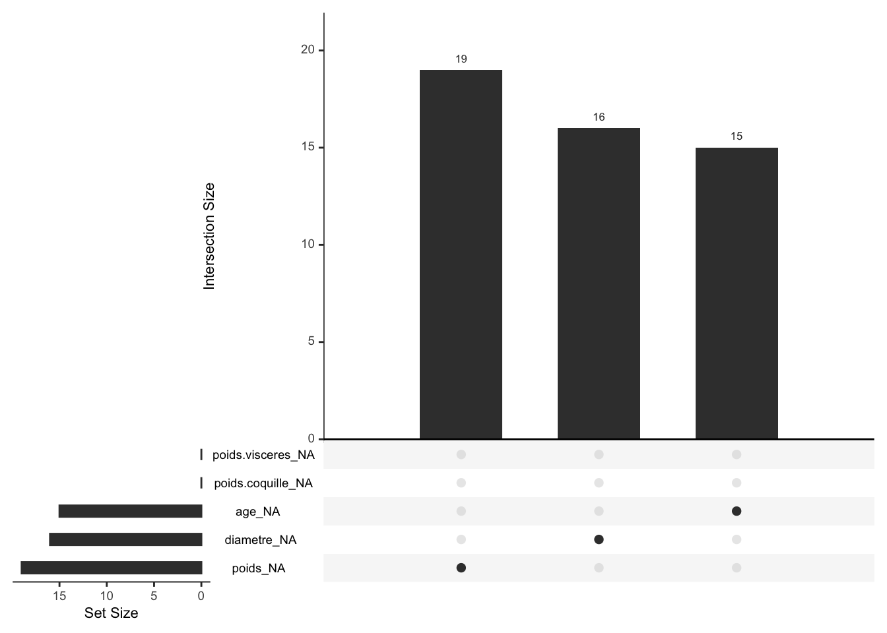
Description de la figure.
Le graphique ci-dessus, illustre la répartition des valeurs manquantes (N/A) que nous avons générées et insérées de manière aléatoire dans les colonnes sélectionnées de notre jeu de données. Au total, 50 valeurs manquantes ont été introduites : 19 dans la colonne du poids, 16 dans celle du diamètre et 15 dans celle de l’âge.
Afin de mieux comprendre la distribution des colonnes où nous avons inséré des valeurs manquantes, et pour déterminer les méthodes de remplacement les plus adaptées, nous procédons à l’examen de la normalité et à l’analyse de la corrélation entre nos variables.
Test de normalité
QQ plot Age
qqnorm(crabe$age, main ="Q-Q plot - Age")qqline(crabe$age, col =2)
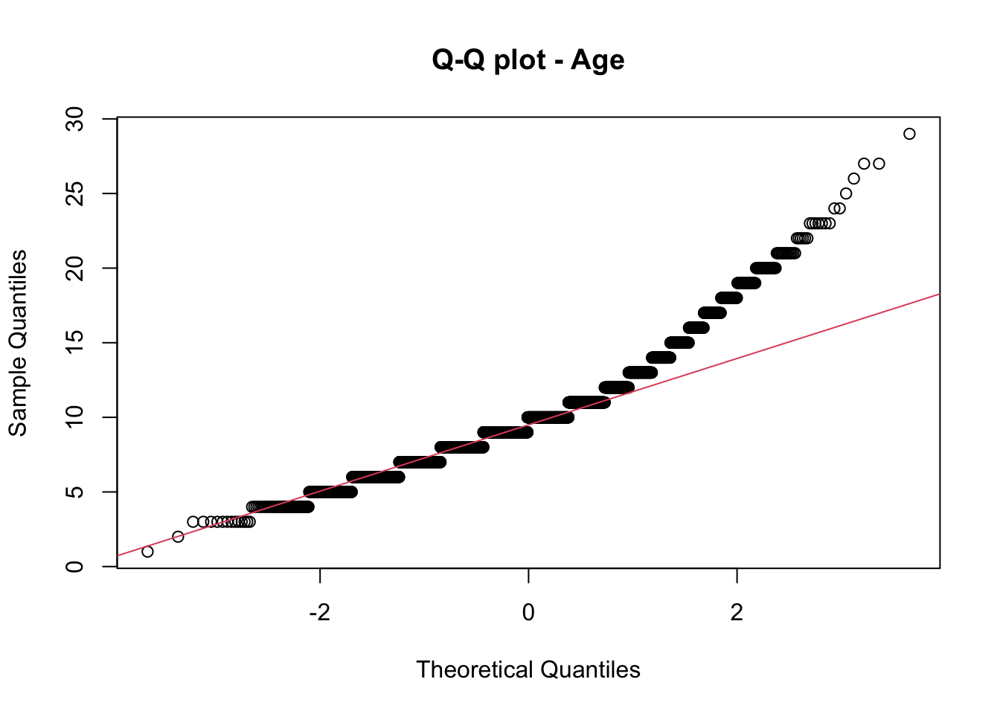
QQ plot Poids
qqnorm(crabe$poids, main ="Q-Q Plot - Poids")qqline(crabe$poids, col =2)
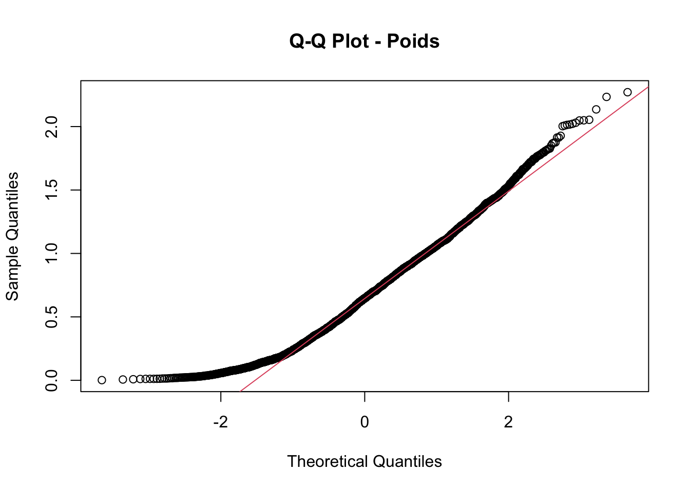
QQ plot Diametre
qqnorm(crabe$diametre, main ="Q-Q Plot - Diamètre")qqline(crabe$diametre, col =2)
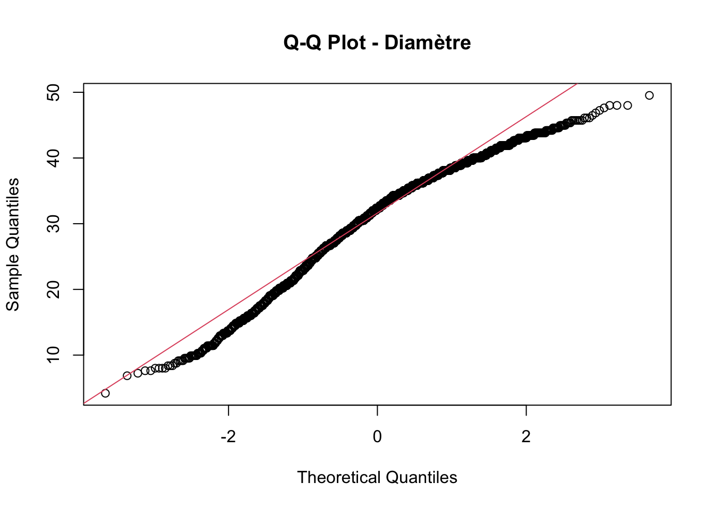
Un graphique Q-Q (quantile-quantile) est un outil visuel utilisé en statistique pour comparer deux distributions de probabilité en traçant leurs quantiles l’un contre l’autre. Il est souvent utilisé pour vérifier si deux ensembles de données suivent une même distribution. Si les points s’alignent approximativement sur une ligne droite, cela suggère que les deux distributions sont similaires.
Dans notre cas, les Q-Q plots ne suivent pas la droite de la loi normale, nous pouvons donc supposer qu’ils ne suivent pas une distribution normale.
Calculer la moyenne et l’écart-type de nos données
Test KS pour comparer nos données à une distribution normale
age.ks<-ks.test(crabe$age, "pnorm", mean = moyenne_age, sd = ecart_type_age)
Warning in ks.test.default(crabe$age, "pnorm", mean = moyenne_age, sd =
ecart_type_age): ties should not be present for the Kolmogorov-Smirnov test
age.ks
Asymptotic one-sample Kolmogorov-Smirnov test
data: crabe$age
D = 0.14369, p-value < 2.2e-16
alternative hypothesis: two-sided
poids.ks<-ks.test(crabe$poids, "pnorm", mean = moyenne_poids, sd = ecart_type_poids)
Warning in ks.test.default(crabe$poids, "pnorm", mean = moyenne_poids, sd =
ecart_type_poids): ties should not be present for the Kolmogorov-Smirnov test
poids.ks
Asymptotic one-sample Kolmogorov-Smirnov test
data: crabe$poids
D = 0.046722, p-value = 9.026e-08
alternative hypothesis: two-sided
diametre.ks<-ks.test(crabe$diametre, "pnorm", mean = moyenne_diametre, sd = ecart_type_diametre)
Warning in ks.test.default(crabe$diametre, "pnorm", mean = moyenne_diametre, :
ties should not be present for the Kolmogorov-Smirnov test
diametre.ks
Asymptotic one-sample Kolmogorov-Smirnov test
data: crabe$diametre
D = 0.080708, p-value < 2.2e-16
alternative hypothesis: two-sided
Nous avons par la suite effectué les tests de Kolmogorov-Smirnov, notre échantillon étant composé de plus de 50 observations. Ces tests confirment ce qu’on a constaté avec les Q-Q plots, nos variables ne présentent pas une distribution normale. De ce fait, nous excluons l’option de remplacement par la moyenne.
Nous observons une corrélation existante entre les variables âge, diamètre et poids.
Risque de multicolinarité
Les variables longueur, diamètre, hauteur, poids, poids.chair, poids.visceres, et poids.coquille ont des coefficients supérieurs à 0.9. Dans le cadre de notre projet, l’objectif est d’utiliser la régression pour prédire et imputer des valeurs manquantes plutôt que pour l’inférence statistique, la multicolinéarité est un peu moins problématique. Cependant, elle peut affecter la stabilité des coefficients de régression utilisés dans l’imputation.
Ainsi, pour la suite, nous opterons pour des méthodes d’imputation plus robustes telles que l’imputation MICE (Multiple Imputation by Chained Equations) et la méthode basée sur l’Analyse en Composantes Principales (ACP), ainsi qu’un remplacement global des valeurs manquantes.
Deuxième méthode de remplacement : l’imputation MICE des valeurs manquantes pour l’age, le poids, diamètre
Nous pouvons donc observer nos 50 valeurs manquantes réparties dans nos trois variables. Chaque valeur manquante n’est que dans une seule variable par observation.
Nous allons par la suite imputer les valeurs manquantes par plusieurs méthodes telles que Prédictive Mean Matching et Random Forest :
PMM() : pour une observation avec une valeur manquante, la méthode trouve un ensemble d’observations (par exemple, les plus proches voisins) dans les données complètes dont les valeurs prédites par le modèle sont proches de la valeur prédite pour l’observation manquante.
RF (Forêt aléatoire) : dans une forêt aléatoire, chaque arbre de décision est entraîné sur un sous-ensemble de données et un sous-ensemble de caractéristiques. La prédiction finale résulte de la moyenne des prédictions de tous les arbres individuels.
Aléatoire
crabe_mice_aleatoire <-mice(crabe_mice, m =5)
iter imp variable
1 1 diametre poids age
1 2 diametre poids age
1 3 diametre poids age
1 4 diametre poids age
1 5 diametre poids age
2 1 diametre poids age
2 2 diametre poids age
2 3 diametre poids age
2 4 diametre poids age
2 5 diametre poids age
3 1 diametre poids age
3 2 diametre poids age
3 3 diametre poids age
3 4 diametre poids age
3 5 diametre poids age
4 1 diametre poids age
4 2 diametre poids age
4 3 diametre poids age
4 4 diametre poids age
4 5 diametre poids age
5 1 diametre poids age
5 2 diametre poids age
5 3 diametre poids age
5 4 diametre poids age
5 5 diametre poids age
iter imp variable
1 1 diametre poids age
1 2 diametre poids age
1 3 diametre poids age
1 4 diametre poids age
1 5 diametre poids age
1 6 diametre poids age
2 1 diametre poids age
2 2 diametre poids age
2 3 diametre poids age
2 4 diametre poids age
2 5 diametre poids age
2 6 diametre poids age
3 1 diametre poids age
3 2 diametre poids age
3 3 diametre poids age
3 4 diametre poids age
3 5 diametre poids age
3 6 diametre poids age
4 1 diametre poids age
4 2 diametre poids age
4 3 diametre poids age
4 4 diametre poids age
4 5 diametre poids age
4 6 diametre poids age
5 1 diametre poids age
5 2 diametre poids age
5 3 diametre poids age
5 4 diametre poids age
5 5 diametre poids age
5 6 diametre poids age
6 1 diametre poids age
6 2 diametre poids age
6 3 diametre poids age
6 4 diametre poids age
6 5 diametre poids age
6 6 diametre poids age
iter imp variable
1 1 diametre poids age
1 2 diametre poids age
1 3 diametre poids age
1 4 diametre poids age
1 5 diametre poids age
1 6 diametre poids age
2 1 diametre poids age
2 2 diametre poids age
2 3 diametre poids age
2 4 diametre poids age
2 5 diametre poids age
2 6 diametre poids age
3 1 diametre poids age
3 2 diametre poids age
3 3 diametre poids age
3 4 diametre poids age
3 5 diametre poids age
3 6 diametre poids age
4 1 diametre poids age
4 2 diametre poids age
4 3 diametre poids age
4 4 diametre poids age
4 5 diametre poids age
4 6 diametre poids age
5 1 diametre poids age
5 2 diametre poids age
5 3 diametre poids age
5 4 diametre poids age
5 5 diametre poids age
5 6 diametre poids age
6 1 diametre poids age
6 2 diametre poids age
6 3 diametre poids age
6 4 diametre poids age
6 5 diametre poids age
6 6 diametre poids age
iter imp variable
1 1 diametre poids age
1 2 diametre poids age
1 3 diametre poids age
1 4 diametre poids age
1 5 diametre poids age
1 6 diametre poids age
2 1 diametre poids age
2 2 diametre poids age
2 3 diametre poids age
2 4 diametre poids age
2 5 diametre poids age
2 6 diametre poids age
3 1 diametre poids age
3 2 diametre poids age
3 3 diametre poids age
3 4 diametre poids age
3 5 diametre poids age
3 6 diametre poids age
4 1 diametre poids age
4 2 diametre poids age
4 3 diametre poids age
4 4 diametre poids age
4 5 diametre poids age
4 6 diametre poids age
5 1 diametre poids age
5 2 diametre poids age
5 3 diametre poids age
5 4 diametre poids age
5 5 diametre poids age
5 6 diametre poids age
6 1 diametre poids age
6 2 diametre poids age
6 3 diametre poids age
6 4 diametre poids age
6 5 diametre poids age
6 6 diametre poids age
Nous observons donc que la méthode de remplacement par la PMM n’est pas optimale, choisissons donc l’imputation par la méthode de random forest.
Après avoir analysé les graphiques, nous pouvons dire que la meilleure itération est la 2ème, c’est pourquoi nous procédons à l’imputation avec celle-ci.
Toutes les valeurs manquantes ont bien été imputées.
Troisième méthode: ACP (Analyse en composante principale)
La PCA est utilisée pour réduire la dimensionnalité des données tout en préservant autant que possible la variance des données. Elle s’effectue sur des variables exclusivement quantitatives.
Le principe est d’itérer entre l’estimation des composantes principales et l’imputation des valeurs manquantes jusqu’à contingence.
La PCA elle-même ne fait pas d’hypothèses sur la distribution des données. Elle cherche à capturer la structure linéaire (corrélation) entre les variables.
Dans le contexte de l’imputation, l’objectif est de remplacer les valeurs manquantes de manières à préserver la structure globale des données.
crabe_acp <- crabe_missMDA |>drop_na()
Cette première étape à permis de trier notre jeux de données en ne gardant que les valeurs non-manquantes afin d’effectuer l’ACP.
# A tibble: 3 × 9
sexe longueur diametre hauteur poids poids.chair poids.visceres
<chr> <dbl> <dbl> <dbl> <dbl> <dbl> <dbl>
1 F 45.0 35.4 12.2 0.836 0.354 0.181
2 I 33.1 25.5 8.38 0.308 0.136 0.0651
3 M 44.2 34.7 11.8 0.785 0.340 0.170
# ℹ 2 more variables: poids.coquille <dbl>, age <dbl>
acp_simple <- crabe_acp |>select(- sexe) |>PCA()
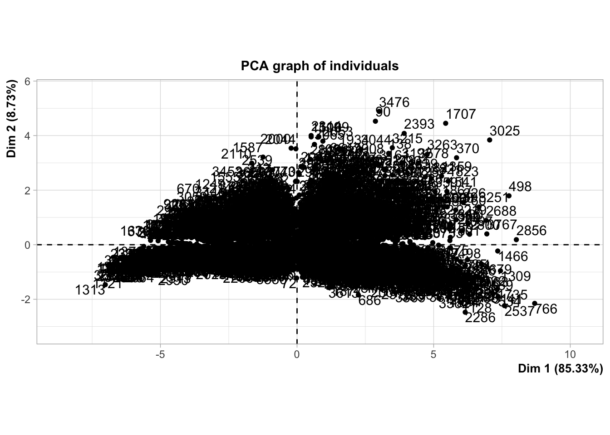
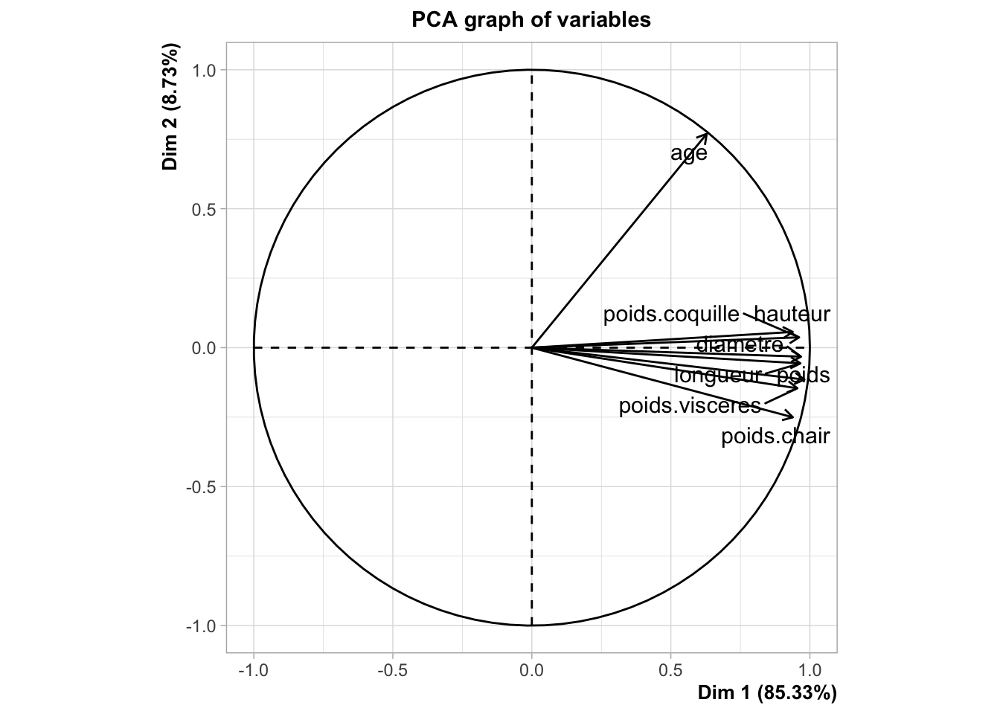
Concernant le cercle de corrélation :
Nous observons dans un premier temps que l’axe 1 à une inertie de 85,3 %, ce qui signifie qu’il explique à lui seul 85,3 % de la variance totale des données. De plus, il représente de manière significative toutes nos variables, à l’exception de la variable age.
Les angles de nos variables sont fermés ce qui nous permet d’affirmer que nos variables sont très corrélées entre elles.
Concernant le graphique des individus :
On observe des clusters d’individus contribuant soit positivement soit négativement aux composantes principales.
contribution<-round(res.pca$var$contrib,2)corrplot(contribution, is.corr=FALSE, method="circle", tl.srt=45, tl.col="#002200",col=brewer.pal(n=9, name="OrRd"), addCoef.col="black", main="Tableau des contributions")
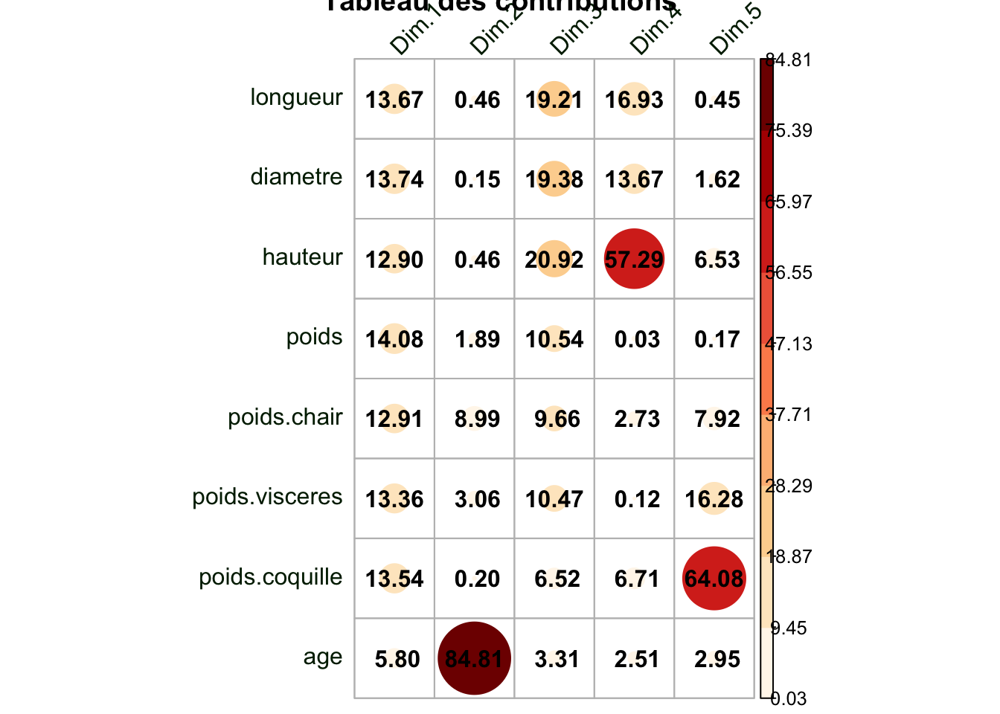
Ce tableau des contributions permet de voir que toutes nos variables sont significatives pour la dimension 1 à l’exception de la variable âge qui est plus contributive pour la dimension 2.
Nous avons ensuite cherché à visualiser les individus dans l’ACP, en leur attribuant des couleurs ou des étiquettes en fonction de certaines variables qualitatives (comme le genre dans le deuxième cas), ce qui facilite la compréhension de la distribution des individus dans l’espace des composantes principales.
Nous procédons donc maintenant à l’analyse en composante principales multiple imputation en excluant la variable “sexe”, étant une variable qualitative, elle ne peut pas être utilisée dans l’acp qui est exclusivement quantitative. De plus, nous spécifions que nous travaillerons avec deux composantes principales avec le paramètre : ncp=2.
plot.MIPCA(crabe_complet_acp, choice ="dim")
$PlotDim
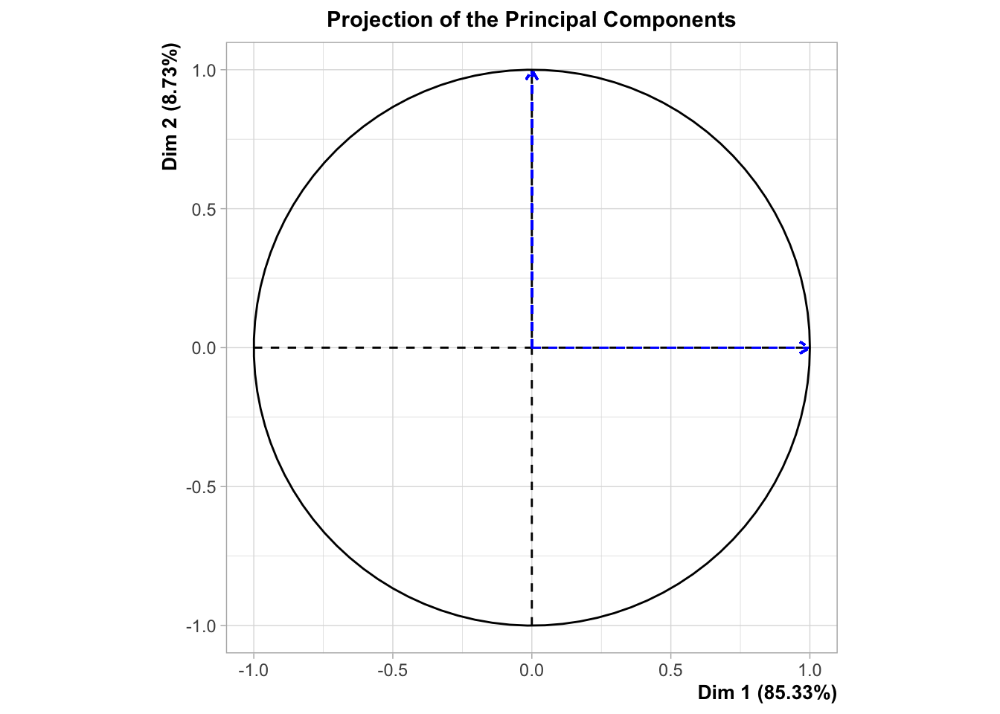
Le premier graphique après imputation est la projection de nos variables selon les deux premières dimensions de l’ACP.
Comme toutes les flèches sont proches soit de l’axes 1 soit de l’axe 2, cela signifie que les axes sont stables. Cette stabilité nous permet d’interpréter les résultats de notre ACP.
plot.MIPCA(crabe_complet_acp, choice ="var")
$PlotVar
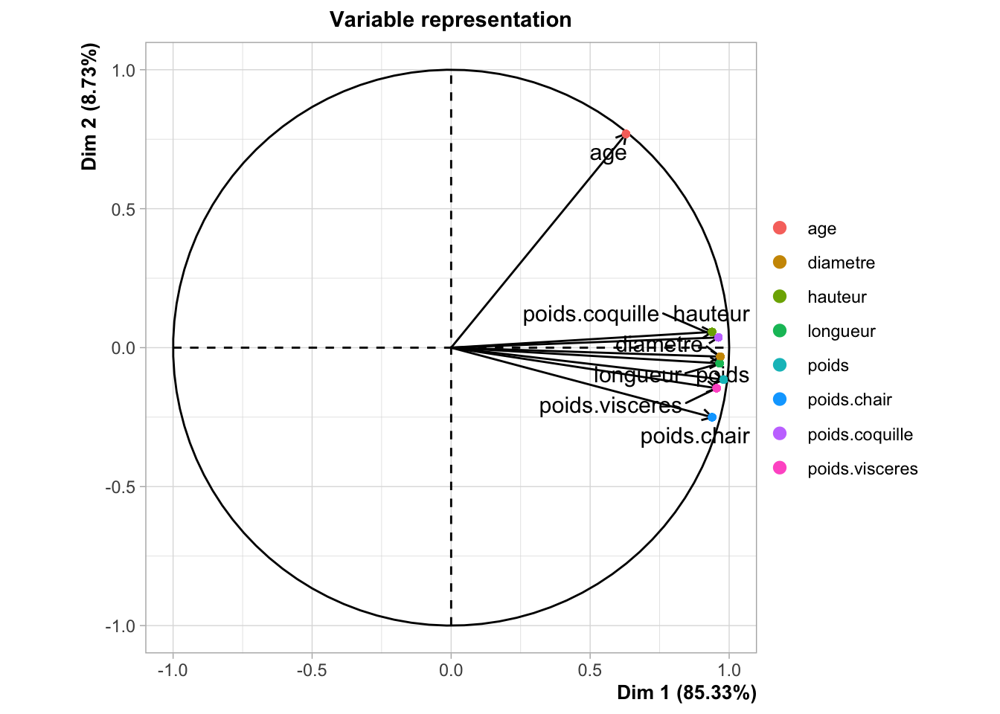
Ce graphique spécifie que l’on souhaite visualiser les variables originales dans l’espace des deux premières dimensions de l’ACP. On observe dans notre cas que le graphique ne montre pas d’auréoles, les données ont donc bien été traitées et elles sont représentées de manière cohérente dans nos deux dimensions.
En observant les résultats, nous pouvons conclure que la meilleure approche pour notre base de données est l’imputation MICE puisqu’elle domine sur deux de nos variables.
Analyse descriptive sans N/A
summary(crabe_complet_mice_rf2)
sexe longueur diametre hauteur
Length:3893 Min. : 5.715 Min. : 4.191 Min. : 0.000
Class :character 1st Qu.:34.290 1st Qu.:26.670 1st Qu.: 8.763
Mode :character Median :41.529 Median :32.385 Median :11.049
Mean :39.969 Mean :31.116 Mean :10.623
3rd Qu.:46.863 3rd Qu.:36.576 3rd Qu.:12.573
Max. :62.103 Max. :49.530 Max. :19.050
poids poids.chair poids.visceres poids.coquille
Min. :0.001607 Min. :0.0008037 Min. :0.0004018 Min. :0.001205
1st Qu.:0.359251 1st Qu.:0.1514963 1st Qu.:0.0755473 1st Qu.:0.105284
Median :0.646170 Median :0.2704431 Median :0.1378335 Median :0.188868
Mean :0.668005 Mean :0.2893730 Mean :0.1456185 Mean :0.192659
3rd Qu.:0.929472 3rd Qu.:0.4046600 3rd Qu.:0.2041383 3rd Qu.:0.265219
Max. :2.270838 Max. :1.1958969 Max. :0.6108076 Max. :0.807713
age
Min. : 1.000
1st Qu.: 8.000
Median :10.000
Mean : 9.958
3rd Qu.:11.000
Max. :29.000
En réexaminant les statistiques de notre jeu de données corrigé et en les comparant à l’analyse exploratoire initiale, nous observons que :
La moyenne de la variable « hauteur » a été légèrement ajustée, passant de 10,649 à 10,623, tandis que la médiane est restée inchangée à 11,049.
Concernant l’âge, la moyenne a été légèrement modifiée, évoluant de 9,955 à 9,958, sans pour autant altérer significativement l’interprétation de la distribution.
Les autres statistiques relatives à la longueur, au diamètre, au poids, au poids de la chair, au poids des viscères et au poids de la coquille sont identiques à celles énoncées dans la description initiale.
Analyse descriptive univariée
Les variables quantitatives sont longueur, diamètre, hauteur, poids, poids de la chair, poids des viscères, poids de la coquille et âge.
Et nous avons une seule variable qualitative: le sexe.
Variable Qualitative
Tableau de contingence
count(crabe_complet_mice_rf2, sexe)
sexe n
1 F 1225
2 I 1233
3 M 1435
Nous avons trois catégories de sexe : femelle (F), indéterminé (I) et mâle (M), avec respectivement 1225, 1233 et 1435 individus dans chaque catégorie.
Après avoir vérifié et corrigé les deux valeurs aberrantes pour la variable « hauteur », nous avons décidé de conserver les valeurs extrêmes présentes pour les autres variables de type poids et taille. De même, concernant l’âge, étant donné que la longévité d’un crabe peut atteindre 3 à 4 ans et que nos données incluent des valeurs jusqu’à 30 mois, soit 2,5 ans, ces observations sont jugées cohérentes avec le comportement naturel des crabes.
Histogrammes
Pour enrichir l’analyse, nous visualisons la forme de la distribution à l’aide d’histogrammes et superposons une courbe de densité. Cela nous permet d’évaluer visuellement la normalité de la distribution et de souligner les modes ainsi que les asymétries.
#| warning: falseggplot(crabe_complet_mice_rf2, aes(x = longueur)) +geom_histogram(aes(y = ..density..), binwidth =1, fill ="blue", color ="black", alpha =0.4) +geom_density(color ="red", size =1) +labs(title ="Distribution de la longueur ", x ="Longueur", y ="Densité") +theme_minimal()
Warning: Using `size` aesthetic for lines was deprecated in ggplot2 3.4.0.
ℹ Please use `linewidth` instead.
Warning: The dot-dot notation (`..density..`) was deprecated in ggplot2 3.4.0.
ℹ Please use `after_stat(density)` instead.
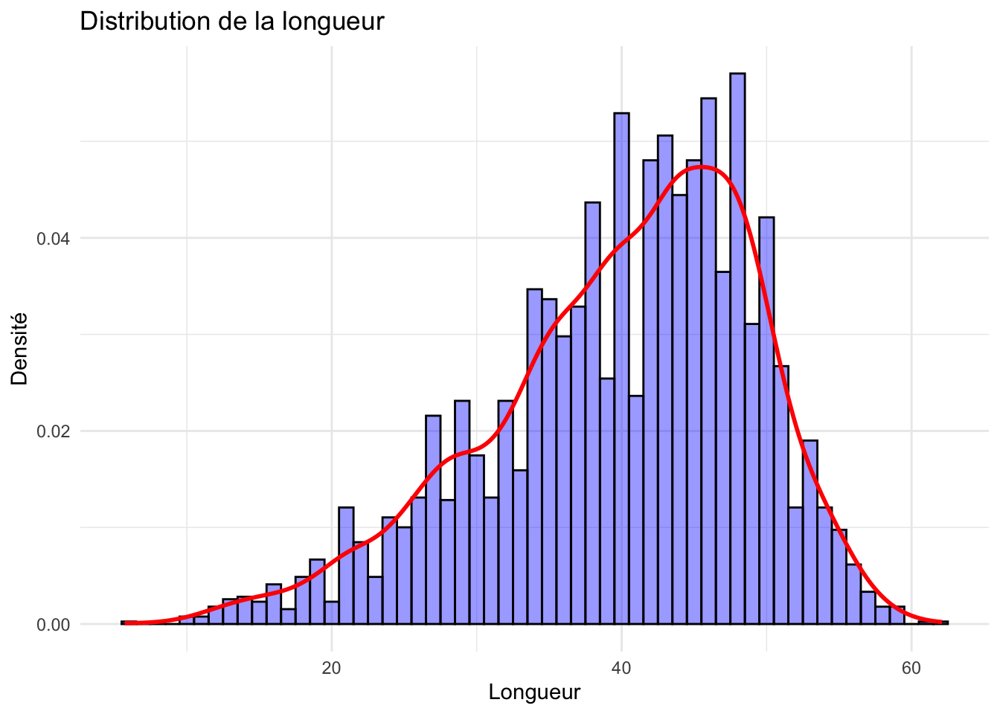
La distribution présente une légère asymétrie à droite. Cela signifie qu’il y a une proportion de crabes qui ont des longueurs plus grandes que la moyenne.
ggplot(crabe, aes(x = diametre)) +geom_histogram(aes(y = ..density..), binwidth =1, fill ="blue", color ="black", alpha =0.4) +geom_density(color ="red", size =1) +labs(title ="Distribution du diamètre avec courbe de densité",x ="Diamètre",y ="Densité") +theme_minimal()
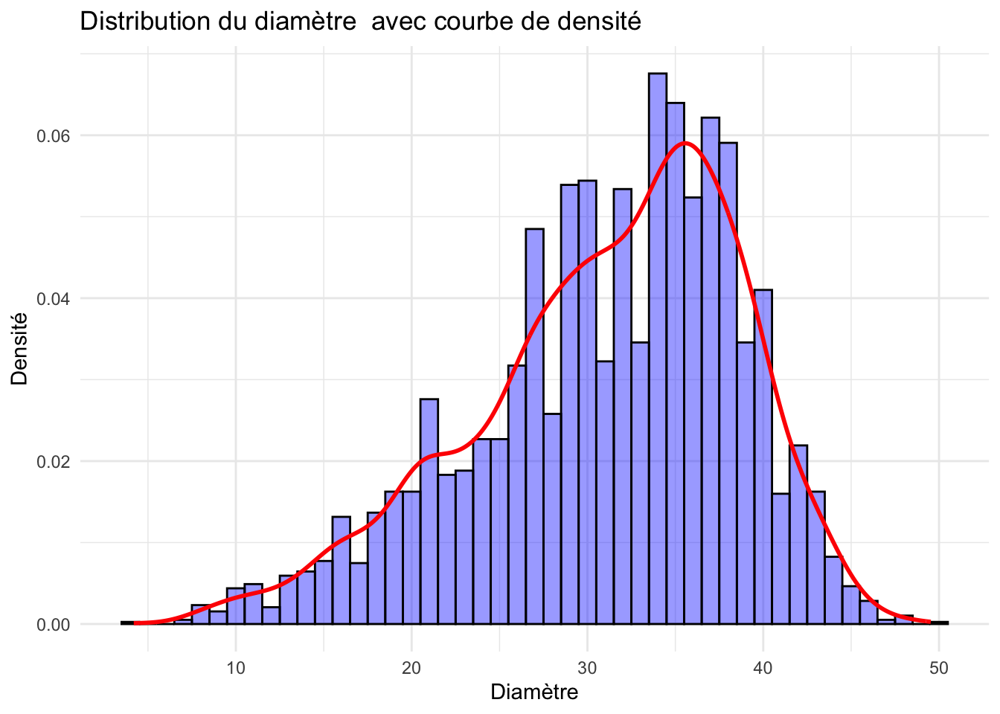
La distribution du diamètre n’est pas symétrique ; elle présente une forme qui semble multimodale et qui n’est pas normale en raison de ses multiples pics.
ggplot(crabe_complet_mice_rf2, aes(x = hauteur)) +geom_histogram(aes(y = ..density..), binwidth =0.5, fill ="blue",color ="black", alpha =0.6) +geom_density(color ="red", size =1) +labs(title ="Distribution de la hauteur ", x ="Hauteur", y ="Densité") +theme_minimal()
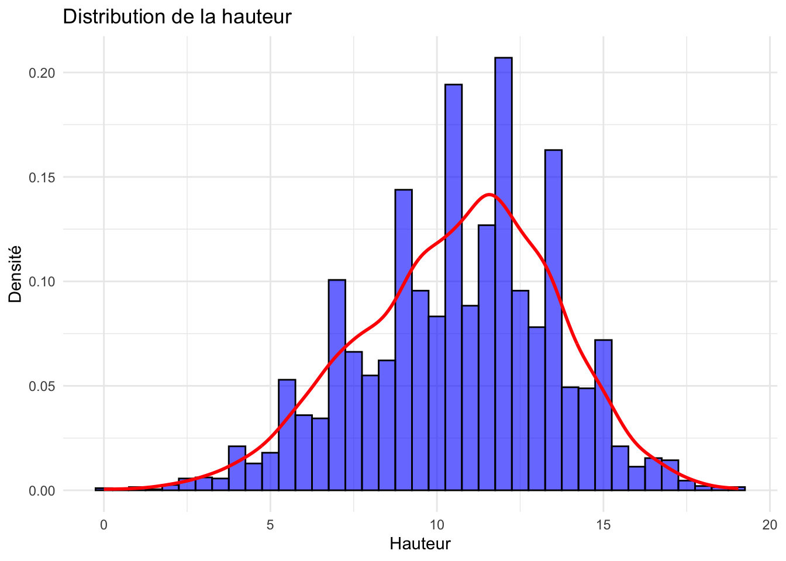
Le graphique nous montre une distribution de la hauteur des crabes qui semble être multimodale, car il y a plusieurs pics.
ggplot(crabe_complet_mice_rf2, aes(x = poids)) +geom_histogram(aes(y = ..density..), binwidth =0.1, fill ="orange", color ="black", alpha =0.6) +geom_density(color ="red", size =1) +labs(title ="Distribution du poids ", x ="Poids", y ="Densité") +theme_minimal()
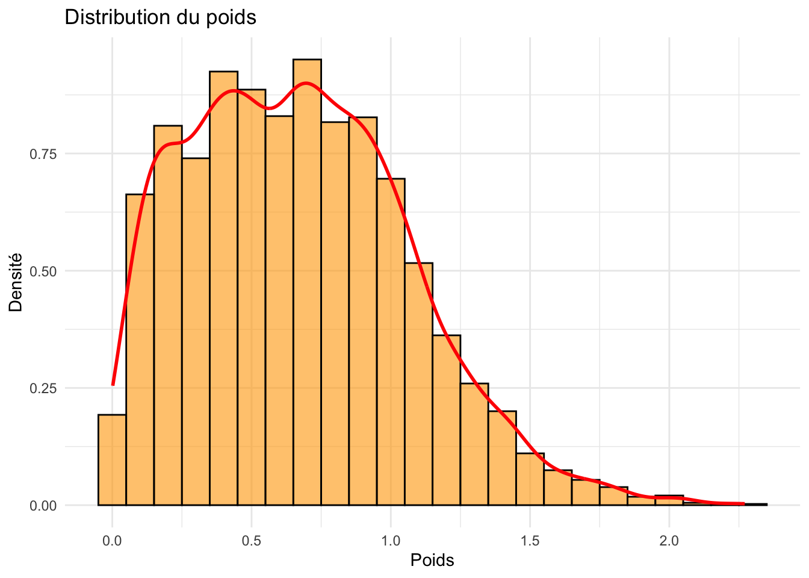
ggplot(crabe_complet_mice_rf2, aes(x = poids.chair)) +geom_histogram(aes(y = ..density..), binwidth =0.01, fill ="orange", alpha =0.6) +geom_density(color ="red", size =1) +labs(title ="Distribution du poids de chair ", x ="Poids de chair", y ="Densité") +theme_minimal()
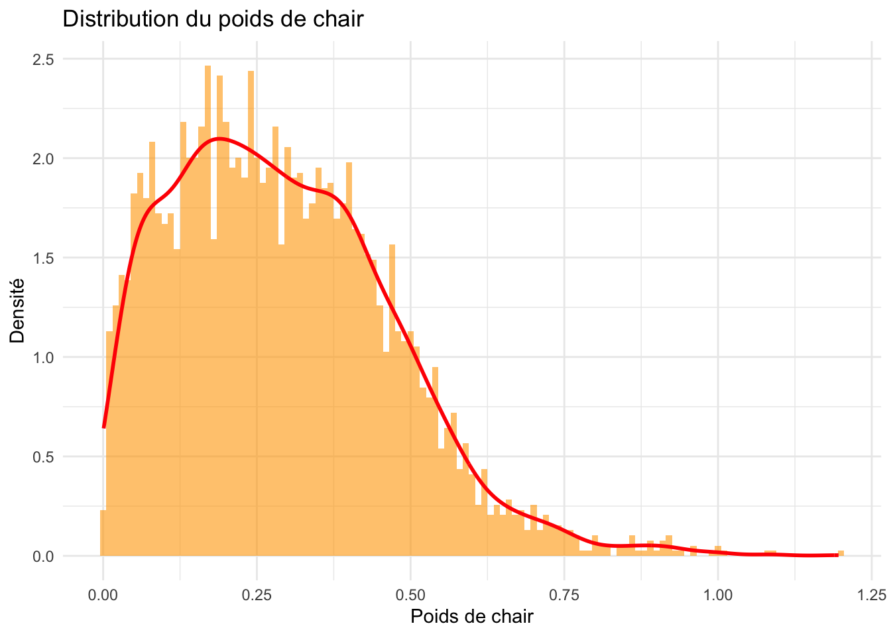
ggplot(crabe_complet_mice_rf2, aes(x = poids.visceres)) +geom_histogram(aes(y = ..density..), binwidth =0.01, fill ="orange", alpha =0.6) +geom_density(color ="red", size =1) +labs(title ="Distribution du poids des viscères ", x ="Poids des viscères", y ="Densité") +theme_minimal()
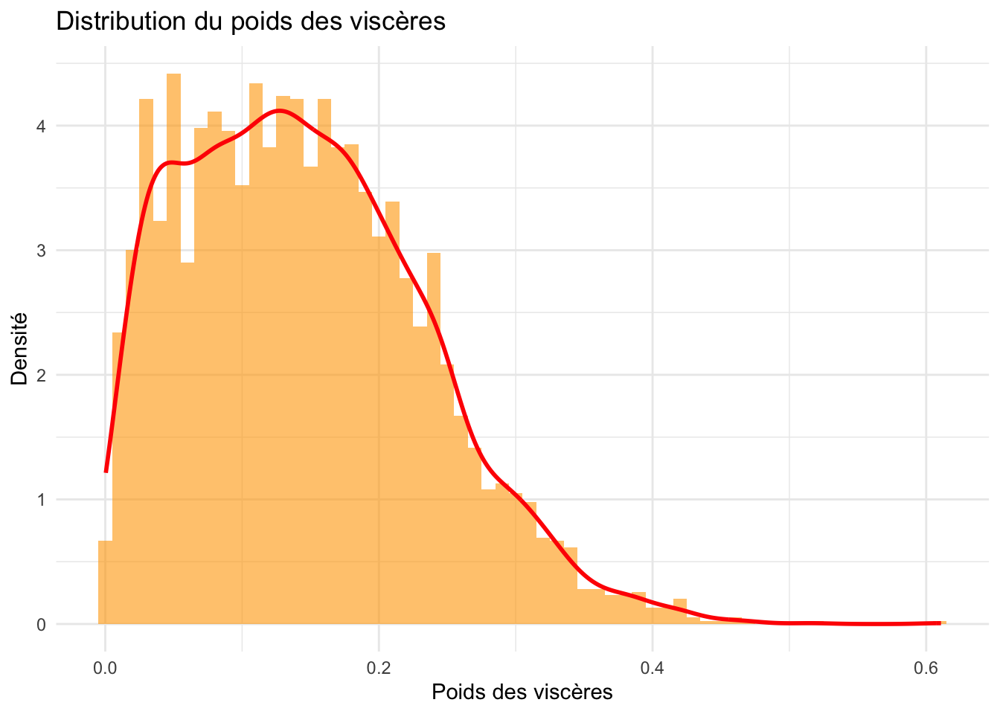
ggplot(crabe_complet_mice_rf2, aes(x = poids.coquille)) +geom_histogram(aes(y = ..density..), binwidth =0.01, fill ="orange", alpha =0.6) +geom_density(color ="red", size =1) +labs(title ="Distribution du poids de la coquille ", x ="Poids de la coquille", y ="Densité") +theme_minimal()
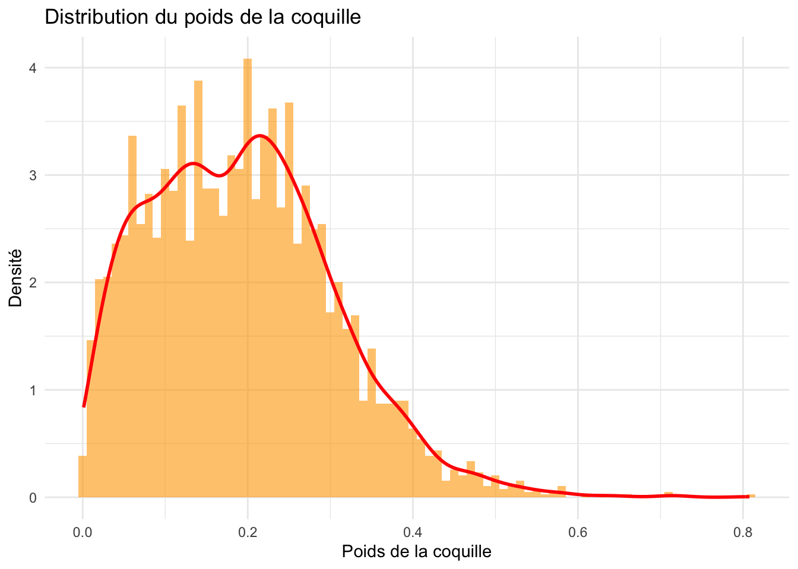
Les poids de viscères, de la coquille et de la chair, pressentent des distribution asymétriques à droite, avec une concentration plus élevée de valeurs faibles et une queue qui s’étend vers des valeurs plus élevées.
ggplot(crabe_complet_mice_rf2, aes(x = age)) +geom_histogram(aes(y = ..density..), binwidth =1, fill ="blue", alpha =0.6) +geom_density(color ="red", size =1) +labs(title ="Distribution de l'âge ", x =" ge", y ="Densité") +theme_minimal()
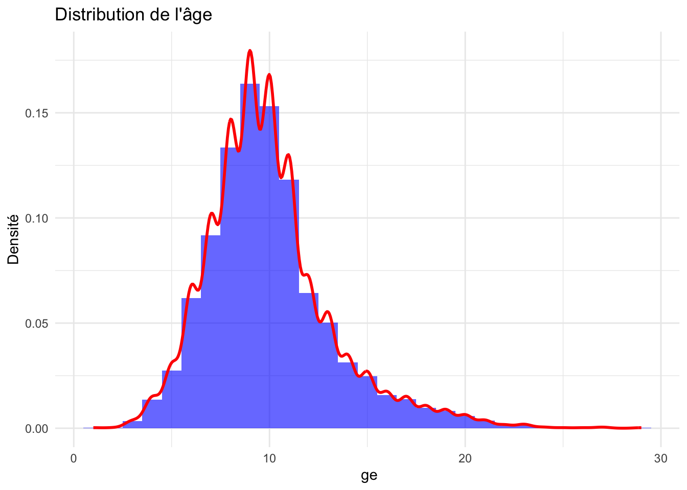
La queue de la distribution s’étend jusqu’à environ 30 mois, avec une diminution progressive de la densité au fur et à mesure que l’âge augmente, indiquant moins de crabes plus âgés.
Analyse Bivariée
Quantitative - Quantitative
ggplot(crabe, aes(x = age, y = diametre, color = sexe)) +geom_point() +scale_color_manual(values = vecteur_couleur) +theme_minimal() +labs(title ="Relation entre l'âge et le diamètre ",x =" ge",y ="Diamètre")
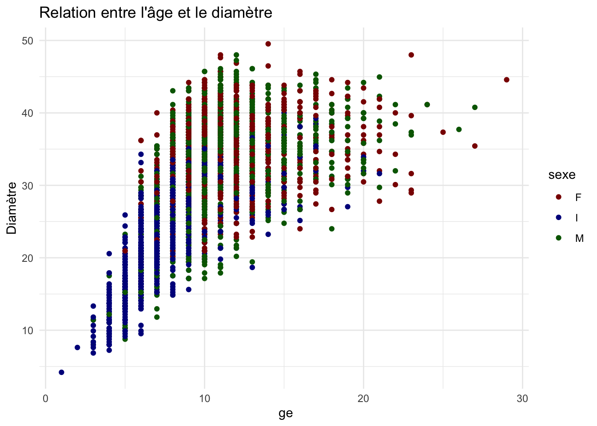
Nous pouvons observer une tendance positive entre l’âge et le diamètre, ce qui signifie que, en général, le diamètre des crabes augmente avec l’âge. Et on peut aussi observer que les crabes de sexe indéfini sont très présents jusqu’à l’âge de 10 mois.
En ce qui concerne la relation entre le “poids”, “poids.chair”, “poids.visceres”, “poids.coquille” les fortes corrélations indiquent que les différentes mesures de poids sont interdépendantes, ce qui n’est pas surprenant compte tenu de leur nature biologique.
Les lignes de régression sont bien ajustées à la distribution des points, bien que quelques points éloignés (valeurs extrêmes) en particulier dans la plage supérieure des valeurs.
variables_quantitatives <-c("longueur", "diametre", "hauteur", "poids")# Création de toutes les paires possibles sans répétition ni inversionpaires <-combn(variables_quantitatives, 2, simplify =FALSE)graphiques <-map(paires, ~ggplot(crabe_complet_mice_rf2, aes_string(x = .[1], y = .[2], color ="sexe")) +geom_point() +geom_smooth(method ="lm", se =FALSE) +scale_color_manual(values = vecteur_couleur) +labs(title =paste("Relation entre", .[1], "et", .[2])) +theme_classic())graphiques
[[1]]
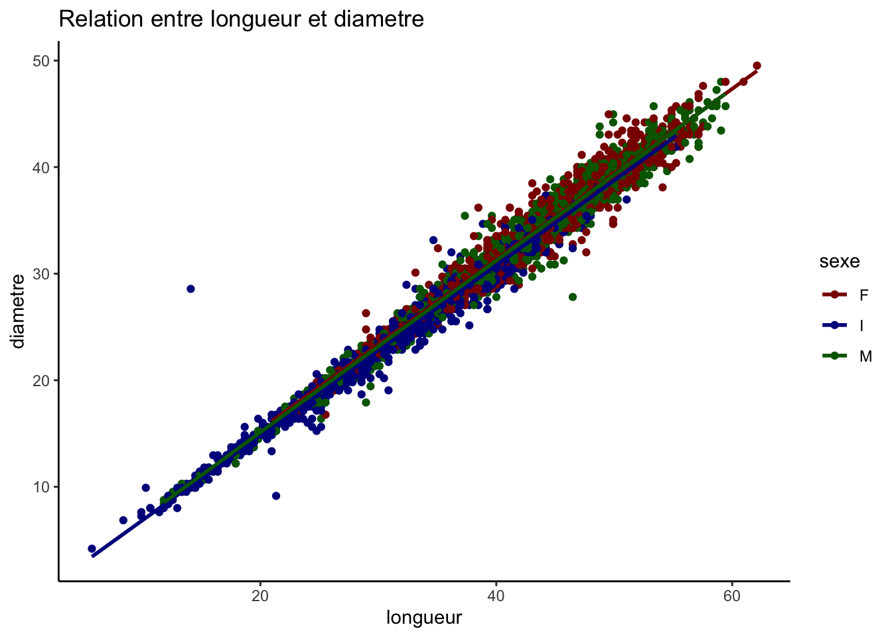
[[2]]
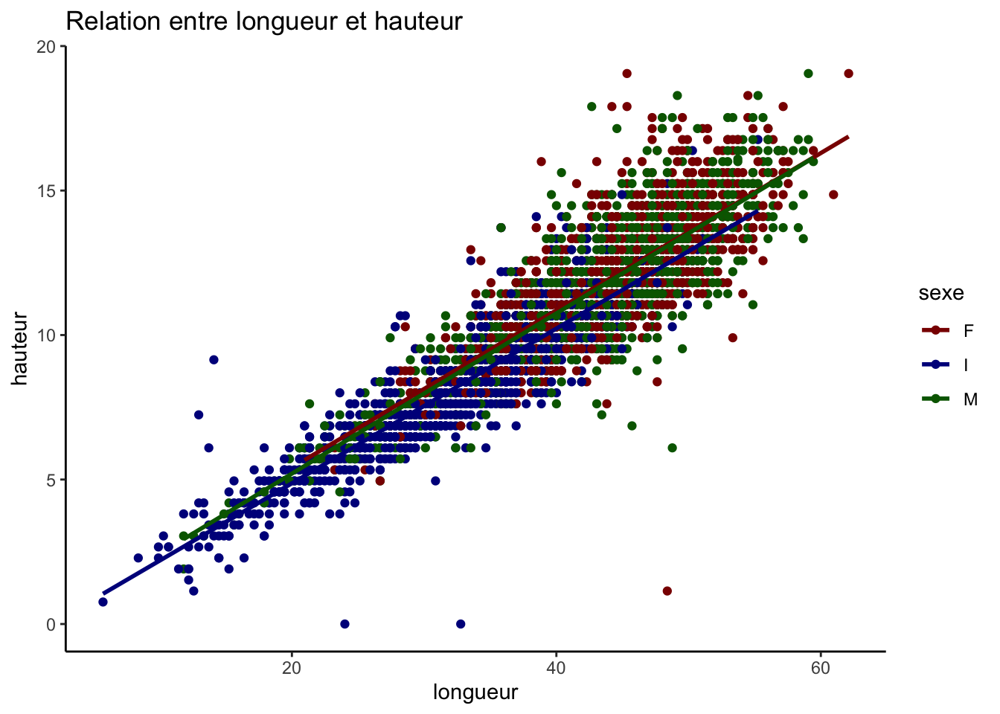
[[3]]
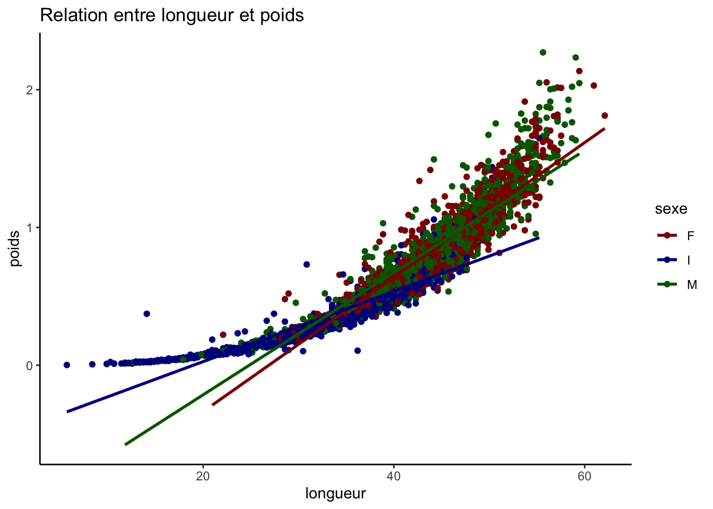
[[4]]
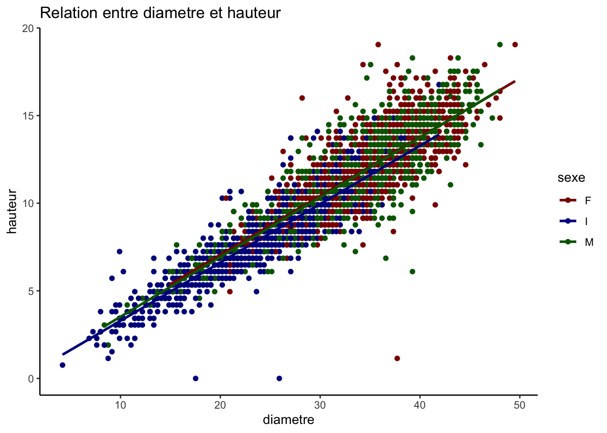
[[5]]
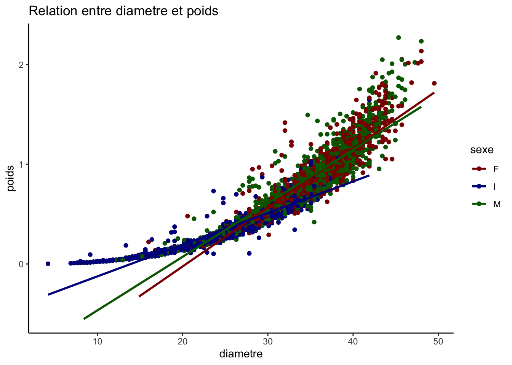
[[6]]
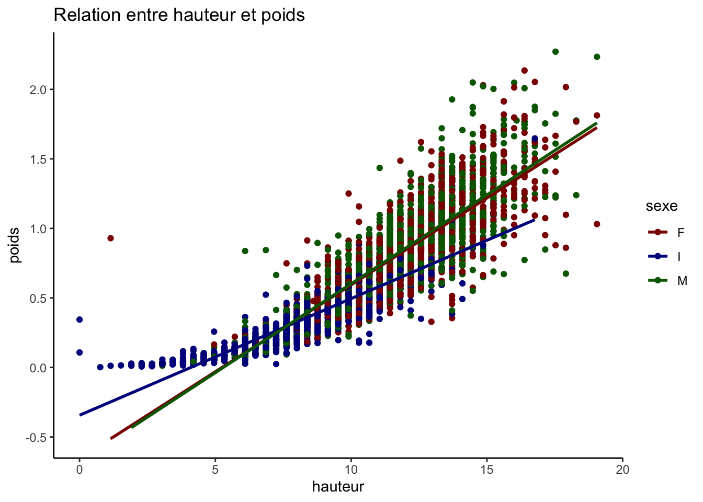
Toutes les relations que nous observons sont positives, par exemple la relation entre le diamètre et le poids signifie qu’à mesure que le diamètre augmente, le poids augmente aussi. La ligne de régression pour les femelles est légèrement supérieure à celle des mâles et des jeunes (I), indiquant que pour un même diamètre, les femelles ont tendance à être plus lourdes.
La relation linéaire entre longueur et diamètre, mais aussi le diamètre et la hauteur et elle est presque uniforme entre les sexes et les points autour des lignes de régression suggère une variance faible des résidus.
En examinant de plus près la répartition des points selon les catégories de sexe, nous constatons que les données des mâles et des femelles se superposent sur une large gamme de valeurs pour toutes les paires de variables étudiées, ce qui indique des caractéristiques similaires entre ces deux groupes. En revanche, les points représentant la catégorie indéterminée (I) se concentrent davantage sur les échelons inférieurs des variables mesurées, suggérant que les individus classés comme indéterminés tendent à avoir des longueurs, des diamètres et des poids inférieurs par rapport aux mâles et aux femelles.
Qualitative - quantitative
Afin d’examiner les relations entre nos variables quantitatives et notre variable qualitative, nous procédons à une visualisations deux à deux :
ggplot(crabe_complet_mice_rf2, aes(x = sexe, y = longueur)) +geom_boxplot() +labs(title ="Comparaison de la taille entre les sexes ", x ="Sexe", y ="Longueur")
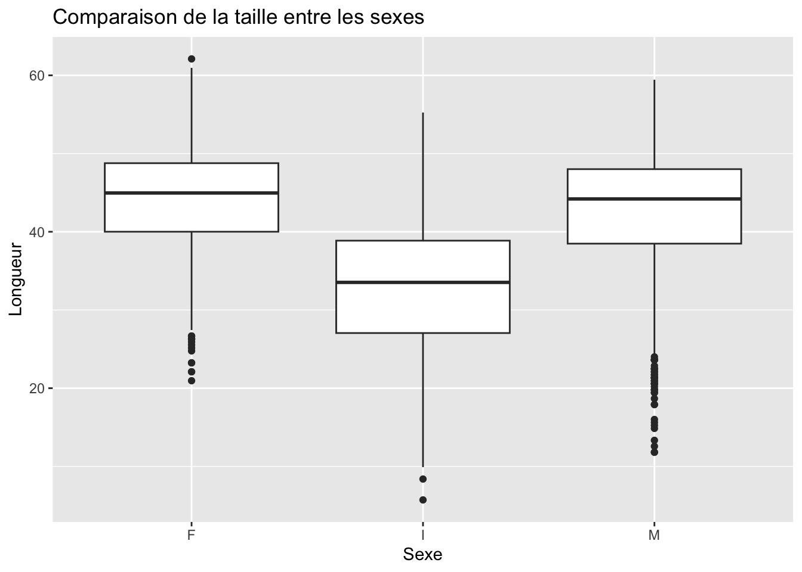
Nous pouvons observer que la médiane semble être légèrement plus élevée pour les femelles que pour les mâles et aussi elles semblent avoir une étendue interquartile (entre le premier et le troisième quartile) plus étroite que celle des mâles. Cela indique que les longueurs des femelles sont moins dispersées autour de la médiane.
ggplot(crabe_complet_mice_rf2, aes(x = sexe, y = poids)) +geom_boxplot() +labs(title ="Comparaison du poids entre les sexes ", x ="Sexe", y ="Poids")
Les crabes féminins et masculins ont des distributions similaires, avec une gamme de poids étendue, tandis que les indéterminées ont une distribution plus concentrée vers les poids inférieurs.
# A tibble: 266 × 3
# Groups: sexe, diametre [266]
sexe diametre n
<chr> <dbl> <int>
1 F 14.9 1
2 F 16.0 1
3 F 16.8 1
4 F 17.1 2
5 F 17.5 1
6 F 19.0 1
7 F 19.4 2
8 F 19.8 3
9 F 20.2 3
10 F 20.6 2
# ℹ 256 more rows
# A tibble: 3,093 × 3
# Groups: sexe, poids [3,093]
sexe poids n
<chr> <dbl> <int>
1 F 0.0643 1
2 F 0.113 1
3 F 0.119 1
4 F 0.125 1
5 F 0.137 1
6 F 0.149 1
7 F 0.151 1
8 F 0.154 1
9 F 0.158 1
10 F 0.161 1
# ℹ 3,083 more rows
# A tibble: 68 × 3
# Groups: sexe, age [68]
sexe age n
<chr> <int> <int>
1 F 5 4
2 F 6 15
3 F 7 39
4 F 8 114
5 F 9 220
6 F 10 237
7 F 11 185
8 F 12 120
9 F 13 85
10 F 14 54
# ℹ 58 more rows
Conclusion
Ainsi, notre base de données, visant à comprendre les caractéristiques des crabes de Boston, est complète. Les valeurs aberrantes, extrêmes et les valeurs manquantes ont été remplacées avec différentes méthodes telles que la régression linéaire et des méthodes d’imputation multiple comme la méthode MICE ou missMDA. Aussi, l’approche MICE est celle que nous avons retenue pour notre analyse descriptive finale, étant celle avec le moins de différence par rapport à la base de données d’origine.
De plus, à la suite de notre analyse descriptive, nous avons voulu montrer au travers d’une régression logistique (Annexe) une analyse permettant d’identifier les caractéristiques des crabes femelles et mâles afin de remplacer le sexe indéterminé, mais cela ne s’est pas révélé significatif.
Selon les résultats, aucun des prédicteurs n’est significatif au seuil traditionnel de 0.05, bien que poids.chair soit proche avec une valeur de p de 0.06477. Cela suggère qu’il pourrait y avoir une association entre le poids de la chair et le sexe des crabes.